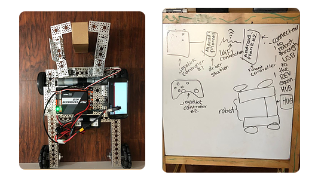
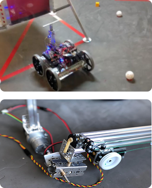
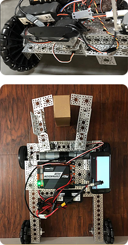
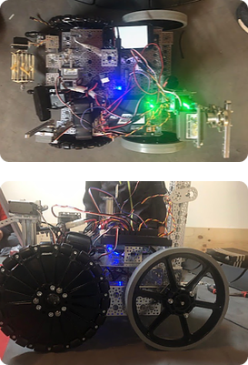

Summary
Our rookie season of FTC started with the Rover Ruckus Challenge. This season was extremely interesting as all of us we're starting from the beginning with FTC we were all rookies and it was an extremely daunting task to create a robot from scratch learn about all the various parts and make everything come together. Throughout the first few weeks, we were learning about the different parts and how they go together. We learned what a drivetrain was we learn the specific vocabulary used to describe parts and types of robots. The software team had to learn how to code the robot. After two months of learning and diligently studying the ways of how to make a robot oh, we were ready to build. we broke down the challenge video into multiple parts and assign a specific task to everyone. Together our team was able to design an amazing robot that could fulfill the tasks of the challenge. We use 8-inch wheels to get over the crater on the field. We haven't arm I could pick up balls and cubes. We designed the robot such that are designed with stick out when we went to the competition we didn't see many teams using 8-inch wheels like us so our design choice is much different than everyone else. One of our Fondest Memories from the tournament was when one of our drivers named Ansh Parikh was able to latch on to the handle of the lender in the middle of the field with less than five seconds remaining. It was amazing how quickly he got locked in and Lester hook onto the handle to hoist ourselves up. Overall the season gave us a lot to think about for the seasons to come and we learned a lot.
The beginning of the storm
We were a rookie team, we had people going in and out of the team, but once we got a final set of people we got started right away. It was our first time, so we watched videos on how to build and were still understanding the basics. We were a rookie team, but we found our way out of dead ends and stayed strong throughout the season!

Software for the season
In our first season we didn’t have much experience with coding a robot except block programming for FLL. This time around, we were using Java with Android Studio. For about a month, much of the programming team was stuck learning how to get around Android Studio, and we weren’t able to get much done on that end. However, we soon started to code the autonomous routes, in which we created separate routes for different orientations of the gold mineral. We did this by using time to measure how long it would take the robot to complete certain steps. However, this proved to be very inefficient. After we changed the size of the wheels from 4 to 8 we found out that the wheels covered different distances in different amounts of time, so we had to keep on changing the code for every change in design. This caused us to lose a lot of time in testing our routes for perfection. So, we decided to use encoders which were very useful since they would allow us to enter specific distances the robot needed to go in different directions, so it would go exactly that distance. We had to use the ticks per revolution, measurements of the wheels and specs of the motors to input into a formula in the code and got a perfect distance each time. We also added image recognition to our routes so we would be able to detect the different orientations of the minerals and run certain routes based on it. Our teleOP was able to function well and we were able to drive the robot with the controller smoothly after assigning controls to different motors and servos.
build for the season
For the build side on the Rover Ruckus challenge, we used a plethora of interesting designs. We broke down the challenge after watching The Challenge video multiple times. We find specific tasks that robots need to do and assign them to each individual person. For example, in order to get over the crater on the field will use 8in Wheels. We brainstormed that idea together and figured that that would be the best way to move forward. Another example of an interesting design we created was the mechanism that hung onto the handle of the Lander in the middle of the field. This mechanism consisted of a linear actuator in which one would be able to move up and down to the height of the structure we were supposed to hang on to on the top of the linear actuator replaced hook with a servo which would latch onto the handle on the Lander. In the end, we had a very unique robot with the wheels being the centerpiece. Build was an interesting factor during this season.


Initial Robot
We only went to one competition during our first competition, but we went through many iterations of our robot. Our first robot was a basic Pushbot with 6 four inch heavy duty wheels allowing the robot to drive over ramps, such as the crater. This robot also included a gripper/claw design which we created with 2 servos in order to pick up the minerals once they were identified. However, on the software side, we weren’t able to detect the different minerals using our detection code, so we weren’t able to use the gripper to its full functionality. This robot however was able to run a basic autonomous code we made. In this code the robot would push the gold mineral forward from a specific spot(only worked when the gold mineral was in the center), go to the depot, place our team marker(our team marker was a pringles can) using a servo, and finally go all the way back and park in the crater at full speed. We were able to park in the crater perfectly each time with this robot because of the 6 wheels allowing for no gap between wheels, so that the robot wouldn’t get stuck on the crater.
final robot
Our final robot was much different however. It contained 4 8 inch wheels(2 omni wheels, and 2 heavy duty wheels), which allowed for the robot to easily go inside the crater completely and come back out. We also had a great autonomous code which would be able to run a certain autonomous route based on the position of the gold mineral, using our object detection code. Overall, in autonomous the robot could complete all the tasks, which included, moving the gold mineral, placing our team marker in the depot(using a servo which dropped the pringles can), and finally parking in the crater using our massive, 8 inch wheels. However, our tele-op wasn’t as efficient, since we weren’t able to drop the minerals into the lander, as we were not able to finish the arm mechanism with the linear slide. Instead, in teleOp, we mainly fed our alliances minerals to place in the lander, and using a tiny arm(created using a motor which brought a platform down to pick up minerals using a rubber band intake) to place minerals into the depot. Overall, even though we didn’t do so well during the competition, it was our first season, and a learning experience for all of us.
